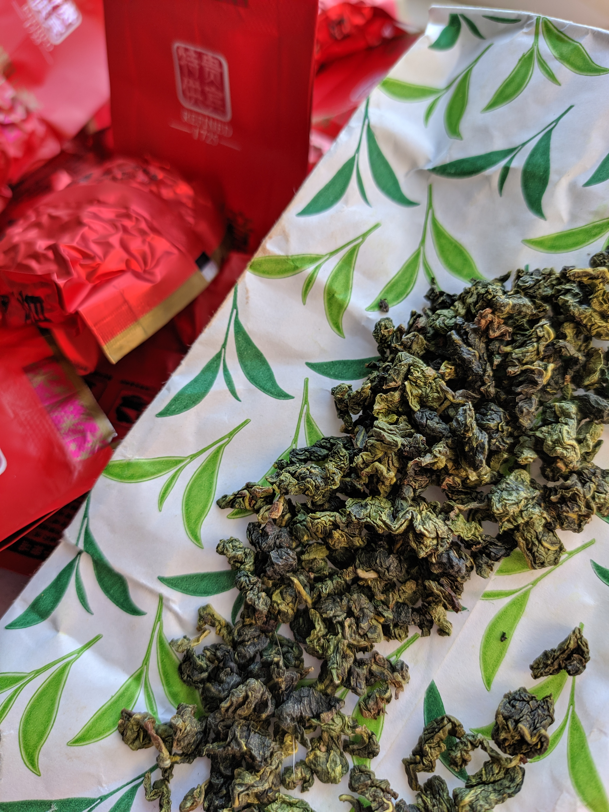
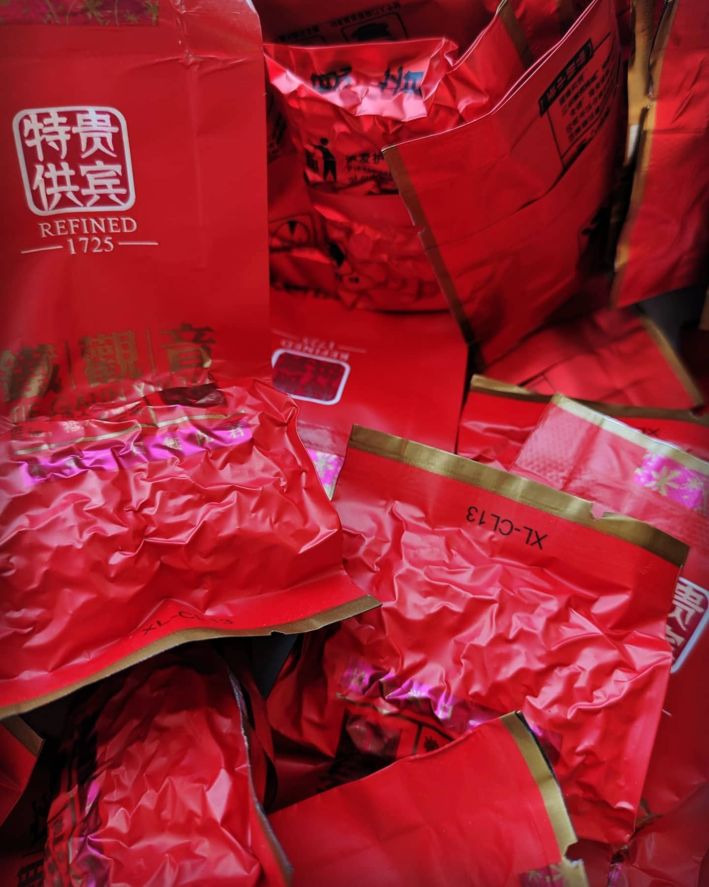
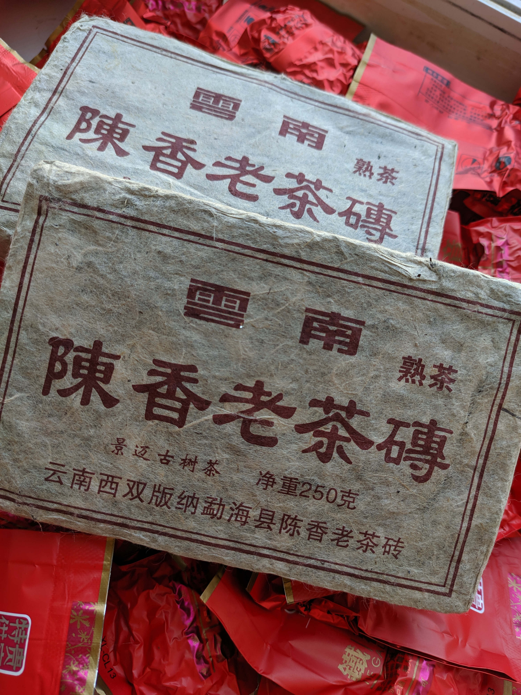
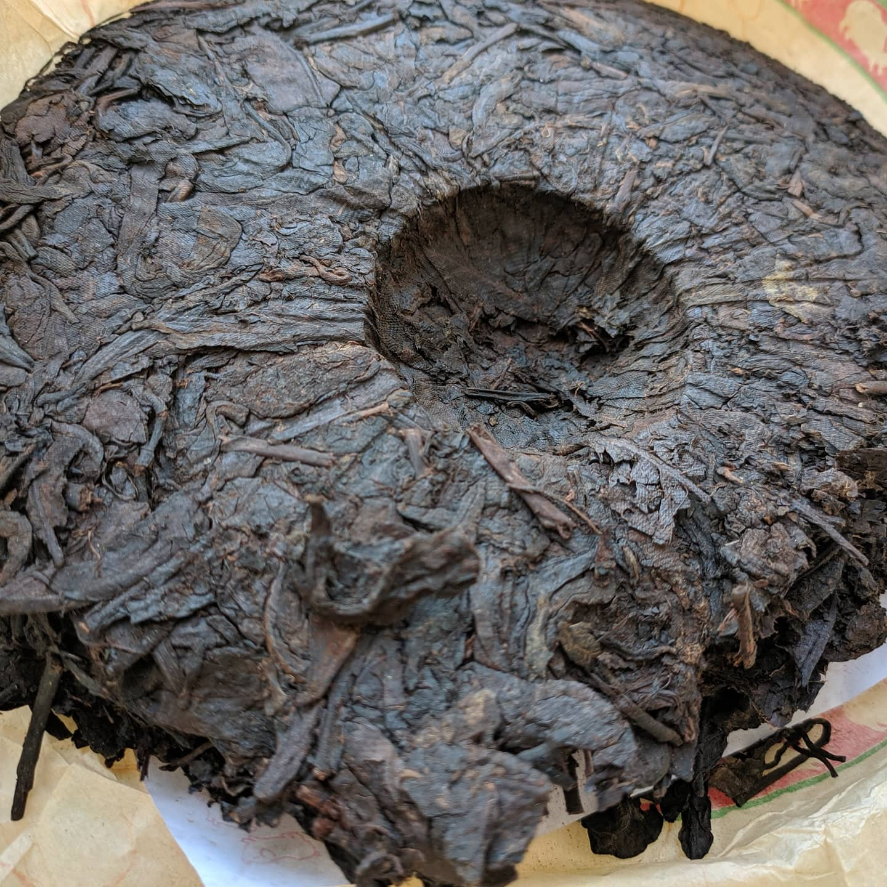
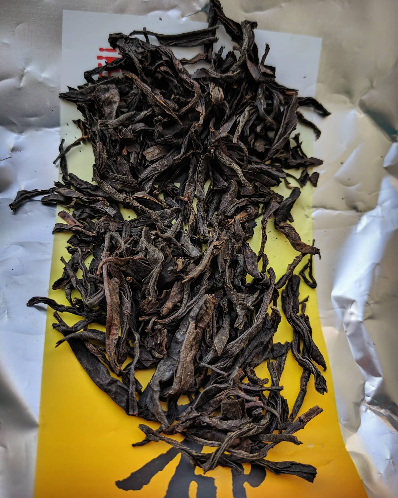
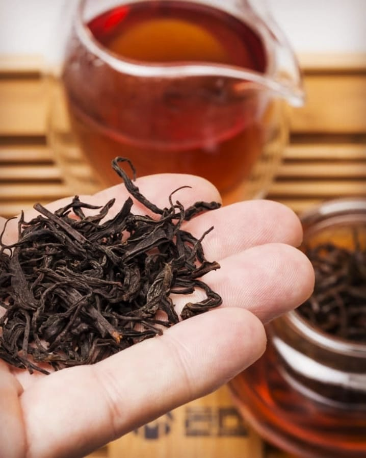
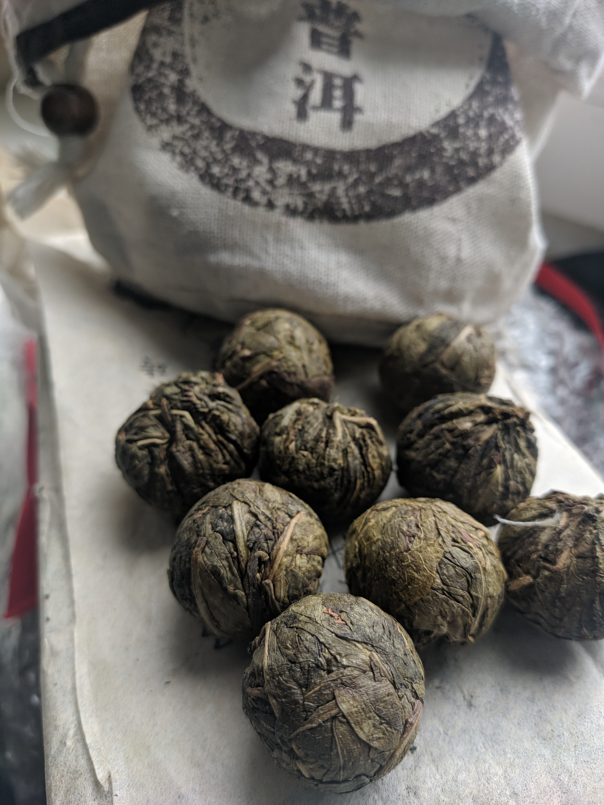

ТігуаніньПевно один із кращих варіантів привести думки в порядок. Ефективний помічник щоб почати знайомство з медитацією 🧘♂️ на час карантину. ⠀ Стан який дарує чаювання. Легка ейфорія розливається по всьому тілу з кожним ковтком Ті гуан інь😊, даючи відчуття блаженної теплоти і щастя. ⠀ На смак квітковий🌺, довгограючий. Залишає легку солодкість післясмаку. ⠀ І як всі улуни має свою дію на організм❣️, нормалізує тиск, виводить токсини і знижує холестирин---------------------------
добавить в корзину |


Шу ПуерБадьорість і запал 🤩 з самого ранку, знайомо? чи не завжди? У нас для цього цікава пропозиція, найпопулярніший з пуерів в світі 🌍. ⠀ Шу пуер класичний також називають чорним пуером, той самий енергетик⚡ і улюблений замінник кави ☕ зранку. ⠀ При цьому нормалізує обмін речовин, розганяє кров та очищає судини, що однозначно не всі корисні властивості для організму 😉----------------------------------------------------- -------------------------------------------------------------------- --------------------------------------------
добавить в корзину
|


ДахунпаоДа хун пао призове місце Гуфа в пісні🎵 "Чайный пьяница". Що й не дивно, полюбився багатьом хто мав нагоду спробувати. ⠀ В собі має ефект ясного розуму 🧐) та приливу сил 💪 Та плюс багатий на вітаміни групи В, Е, С, К і мікроелементами: фосфор, калій і магній, йод, селів і інші. ⠀ Він не тільки заспокоює😌 нервову систему, але і компенсує нестачу корисних речовин)------------------------------------------------------------ ------------------------------------------------------------------------- ---------------------------
добавить в корзину
|


Зелений пуерПочніть ранок не з кави :) ☕ Шен по-іншому називають ще зеленим або сирим пуером. На відміну від шу пуеру, діє м'якще і має розслабляючий та тонізуючий ефект. Чудовий варіант запобігти стресу, та заспокоїти нерви.😌 Є важливим що нормалізує роботу травлення та ендокринної системи. Чай шен пуер називають напоєм безсмертя, через його особливості створювати середовище для швидкої регенерації клітин.⛑️ Рекомендую спробувати і чорний і зелений пуер, і зрозуміти унікальність кожного з них.
добавить в корзину
|